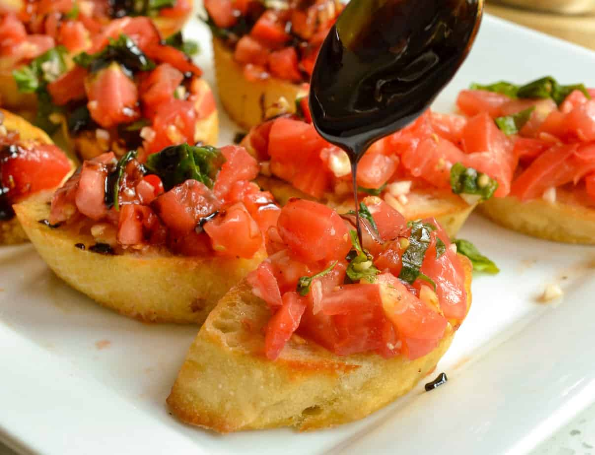

Balsamic Bruschetta

What is Bruschetta?
Bruschetta (pronounced brew-SKET-tah) is an Italian appetizer or antipasti that starts with a base of toasted or grilled bread.
The bread is then served warm either with a topping spooned over or with a topping on the side so each person can build their own bruschetta.
Bruschetta is meant to be served as a hand-held finger food, large enough for one or two bites.
Ingredients
- 1 loaf French bread, cut into 1/4-inch slices
- 1 tablesspoon extra-virigin olive oil
- 8 roma(plum) tomatoes, diced
- 1/3 cup chopped fresh basil
- 1 ounce Parmesan cheese, freshly grated
- 2 cloves garlic, minced
- 1 tablespoon good quality balsamic vinegar
- 2 teaspoon extra-virgin olive oil
- 1/4 teaspoon kosher salt
- 1/4 teaspoon freshly ground black pepper
How to make Bruschetta step-by-step
-
Preheat oven to 400 degrees F (200 degrees C). Brush bread slices on both sides lightly with 1 tablespoon oil and place on large baking sheet.
Toast bread until golden, 5 to 10 minutes, turning halfway through.
-
Meanwhile, toss together tomatoes, basil, Parmesan cheese, and garlic in a bowl. Mix in balsamic vinegar, 2 teaspoons olive oil, kosher salt, and pepper.
-
Spoon tomato mixture onto toasted bread slices and serve immediately.
Back to Home